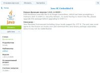

|
This page last changed on Nov 22, 2014 by jjjl.
Dear all,
I am very excited to start using OpenRemote.
I tried to install the system on my Synology DS214PLAY (this was a bit difficult due to Java issues). It seems as if everything is installed well. Yet, when I try to open Controller I get a connection error: Connection failed to http://192.168.xxx.xxx:18581/controller. What could be the issue?
Server: Synology DS214PLAY, DSM 5.1
OpenRemote: v2.0.1-0008
Browsers: Chrome and Opera
I hope anyone can help! Thanks in advance.
Jasper
|
Edit: could this be the issue? When I try to start the OpenRemote service from the Package Centre, the service is stopped directly..
That cannot be right or can it?

Posted by jjjl at Nov 22, 2014 08:07
|
|
After installing the package Openremote, it needs to be updated to the latest current version.
I have installed and running on ds214play.
Posted by aleksey_z at Nov 22, 2014 08:46
|
|
I doubt that OR will run with Java 8. Try to downgrade to Java 7 or even Java 6 to be sure.
Posted by aktur at Nov 22, 2014 10:35
|
|
I have everything works well with Java8. I would like to support multi-channel devices.
Posted by aleksey_z at Nov 22, 2014 10:52
|
|
Hi Aleksey,
Could you indicate which version of Java you are using and whether you used Java Manager or another tool? Are you using DSM 5.1?
Thanks!
Posted by jjjl at Nov 24, 2014 12:48
|
|
Hi, Jasper.

Posted by aleksey_z at Nov 24, 2014 14:19
|
|
{kind=link}
{kind=link}
{kind=link}
{kind=link}
{kind=link}
{kind=link}